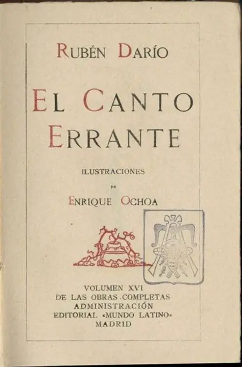
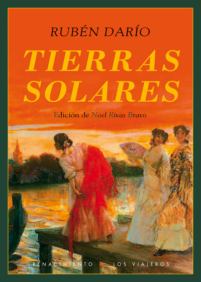
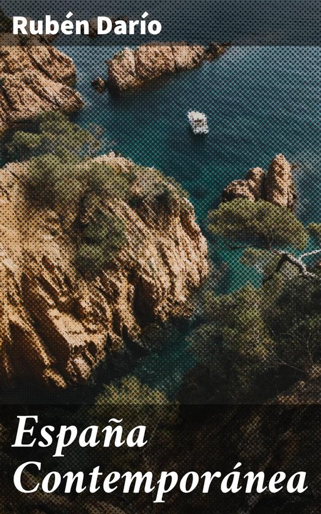
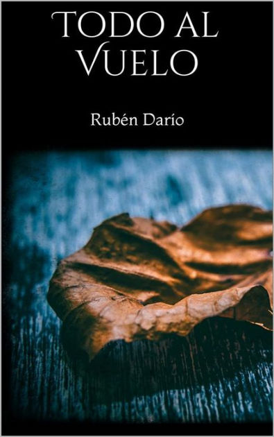
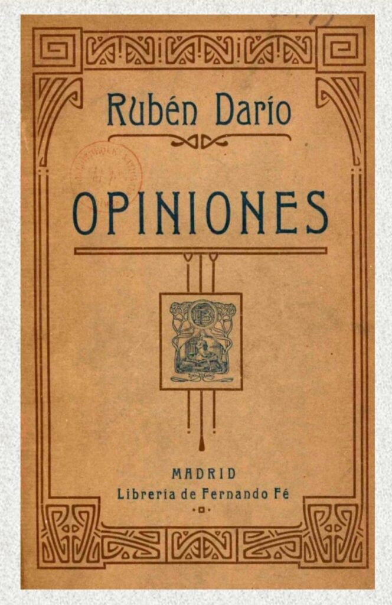
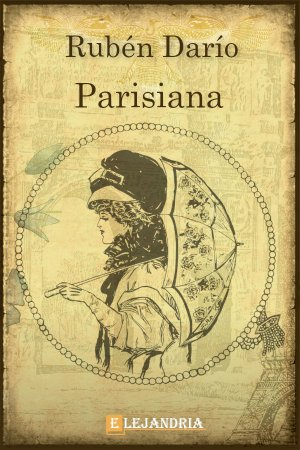
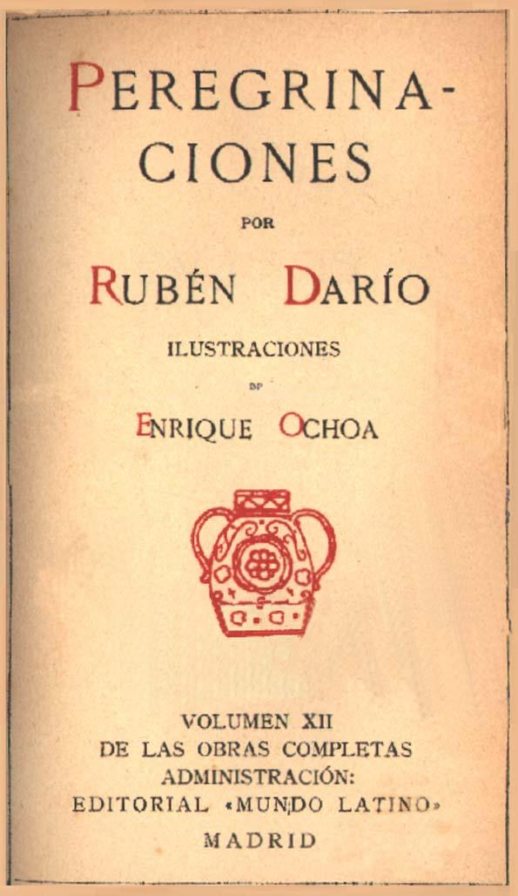
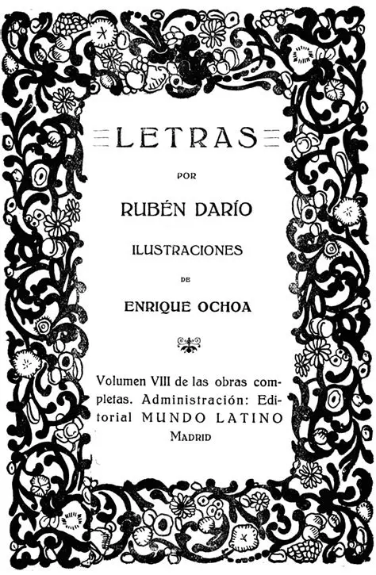
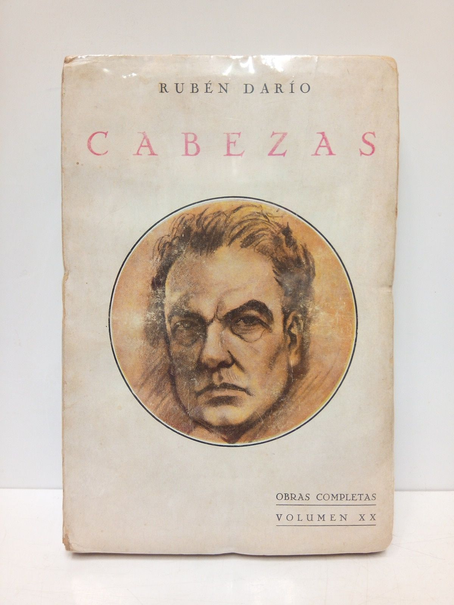
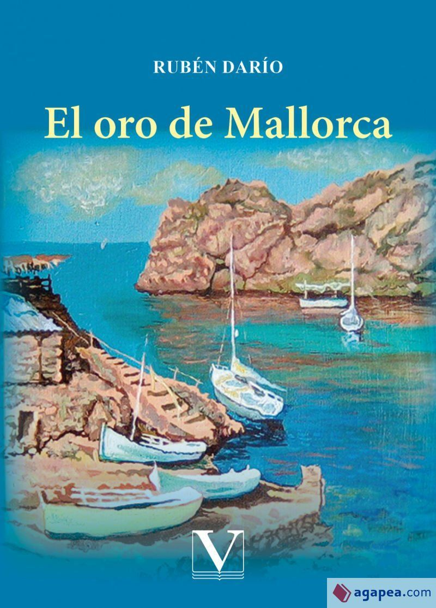

Explora los libros, poemas y ensayos más importantes del gran poeta nicaragüense.

Obra publicada en 1888 considerada el inicio del modernismo.

Libro fundamental del modernismo lleno de musicalidad.

Una obra madura donde reflexiona sobre la vida y el destino.

Poemas escritos durante sus viajes por Europa.
Libro reflexivo sobre el paso del tiempo.
Poema épico dedicado a la nación argentina.
Ensayos sobre escritores admirados por Rubén Darío.

Crónicas de viajes y reflexiones culturales.

Crónicas sobre la cultura española.
Autobiografía escrita por el propio poeta.
Relato del regreso de Rubén Darío a su patria.

Artículos y crónicas escritos durante su carrera.

Ensayos sobre literatura, cultura y sociedad.

Textos sobre la vida cultural parisina.

Crónicas de los viajes de Rubén Darío por distintos países.

Artículos y reflexiones sobre literatura y cultura.

Retratos y ensayos sobre figuras del mundo cultural.

Una novela corta escrita durante su estancia en Mallorca.